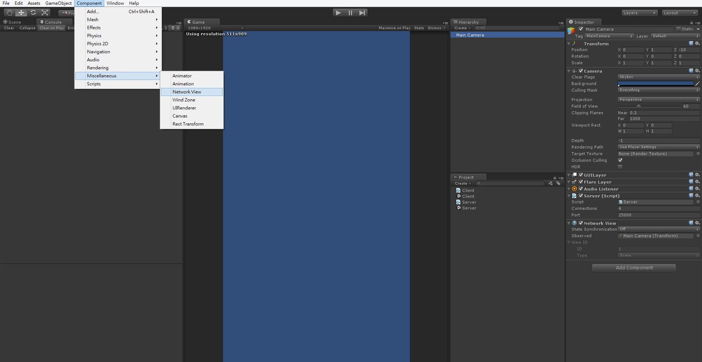
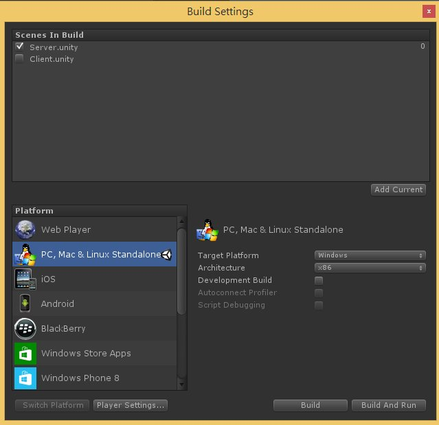
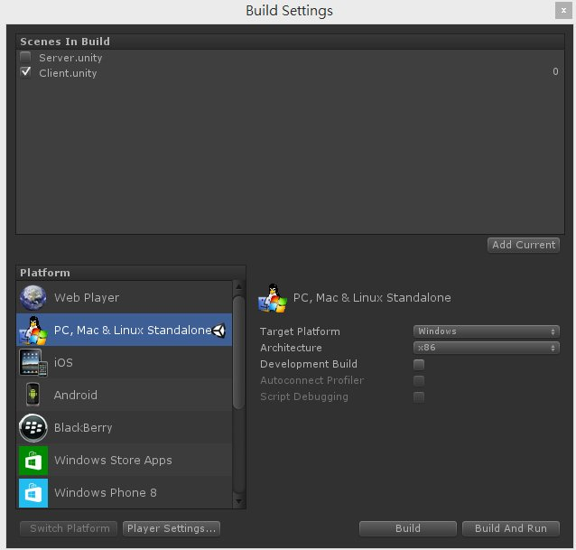
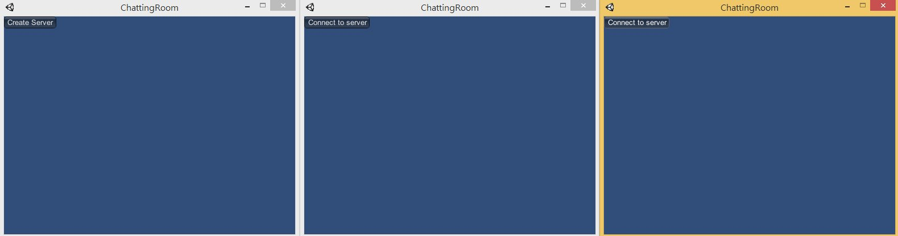
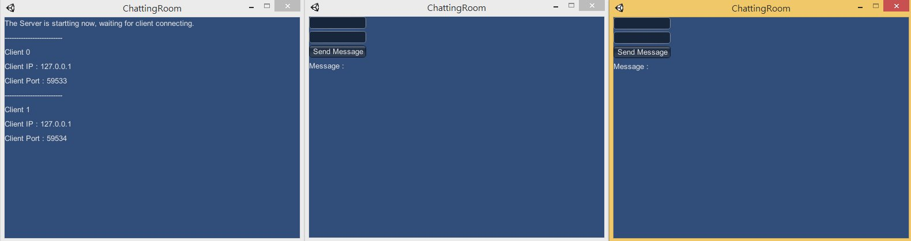
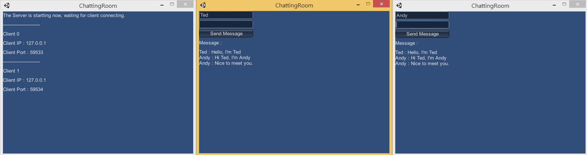

由於有人問到如何建立聊天室
所以利用 Unity 中內建的 Network 來簡易說明
首先新增一個 Server.cs
using UnityEngine;
using System.Collections;
public class Server : MonoBehaviour
{
//The number of allowed incoming connections
public int connections = 4;
//The port number we want to listen to
public int port = 25000;
void OnGUI()
{
//Network state
switch (Network.peerType)
{
//Disconnected
case NetworkPeerType.Disconnected:
CreateServer();
break;
//In server
case NetworkPeerType.Server:
OnServer();
break;
}
}
//Create server button
void CreateServer()
{
if (GUILayout.Button ("Create Server"))
{
//Initialize the server
//Network.InitializeServer(int connections, int listenPort, bool useNat);
Network.InitializeServer( connections, port, false );
}
}
//Wait for client and display the client information
void OnServer()
{
GUILayout.Label ( "The Server is startting now, waiting for client connecting." );
int length = Network.connections.Length;
for (int cnt = 0; cnt < length; cnt++)
{
GUILayout.Label( "-------------------------" );
GUILayout.Label( "Client " + cnt );
GUILayout.Label( "Client IP : " + Network.connections[cnt].ipAddress );
GUILayout.Label( "Client Port : " + Network.connections[cnt].port );
}
}
}Server.cs 腳本主要是用來初始化伺服器
這裡所使用的方法都是 Unity API
這個腳本是用來初始化伺服器提供客戶端連線
接下來新增 Client.cs
using UnityEngine;
using System.Collections;
public class Client : MonoBehaviour
{
public string IP = "127.0.0.1";
//The port number we want to listen to
public int port = 25000;
//The total message
private string message;
//The send message
private string sendMessage = "";
//The client name
private string name = "";
void OnGUI()
{
switch (Network.peerType)
{
case NetworkPeerType.Disconnected:
StartConnect();
break;
case NetworkPeerType.Client:
OnClient();
break;
}
}
void StartConnect()
{
if (GUILayout.Button ("Connect to server"))
{
Network.Connect( IP, port );
}
}
void OnClient()
{
name = GUILayout.TextField( name, 10 );
sendMessage = GUILayout.TextField(sendMessage, 25);
if (GUILayout.Button ("Send Message"))
{
//Network send function
//networkView.RPC(string name, RPCMode mode, params object[] args);
GetComponent<NetworkView>().RPC( "ReceiveMessage", RPCMode.All, name, sendMessage );
sendMessage = "";
}
GUILayout.Label ( "Message : " );
GUILayout.Label ( message );
}
//Network receive function
[RPC]
void ReceiveMessage(string n, string msg, NetworkMessageInfo info)
{
message += n + " : " + msg + "\n";
}
}用來傳遞訊息至其他客戶端
並且接受從其他客戶端傳來的訊息
接下來創建兩個新場景並分別命名為 Server 及 Client
分別將兩個腳本賦予場景中的 Main Camera
並新增 Component → Miscellaneous → Network View 至 Camera 上

接著分別輸出兩個場景檔


產生出 Server 及 Client 執行檔後
分別執行一次 Server、兩次 Client

按下 Create Server 按鈕後
至 Client 端按下 Connect to server 按鈕

若伺服端接收成功後
即可開始進行聊天功能測試
測試結果

此範例所用到的 Unity API 彙整
NetworkPeerType
Network.InitializeServer
Network.Connect
NetworkView.RPC